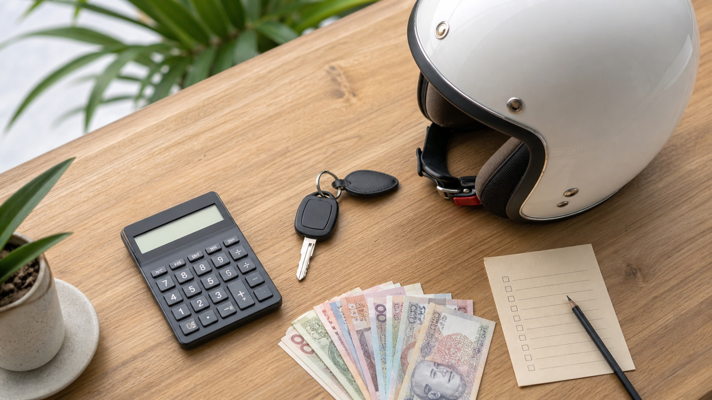

У байка 50cc цена в объявлении — только начало разговора. Для человека, который хочет ездить в Нячанге без лишних поисков и ремонтов в первые дни, важна связка: год, фактический пробег, документы, состояние и то, что сделано перед передачей.
Мы ориентируемся на автоматы 50cc 2022–2023 годов с небольшим подтверждённым пробегом. Их цена обычно находится в коридоре 13–16 млн ₫. По каждому конкретному байку отдельно показываем год, пробег, регистрацию, реальные фото и видео — это важнее красивого названия модели.
Не сравнивай только две цены. Открой рядом год, пробег, фото регистрации и свежие видео. Если один вариант дешевле, но по нему нет документов, неясен объём или невозможно увидеть запуск и состояние, это не тот же товар, что байк с подтверждёнными фактами.
Ответы на эти пять вопросов превращают разговор о цене в нормальный выбор. Подробный разбор состояния есть в статье о пробеге у байка 50cc, а про документы — в материале как подтвердить настоящий 50cc.